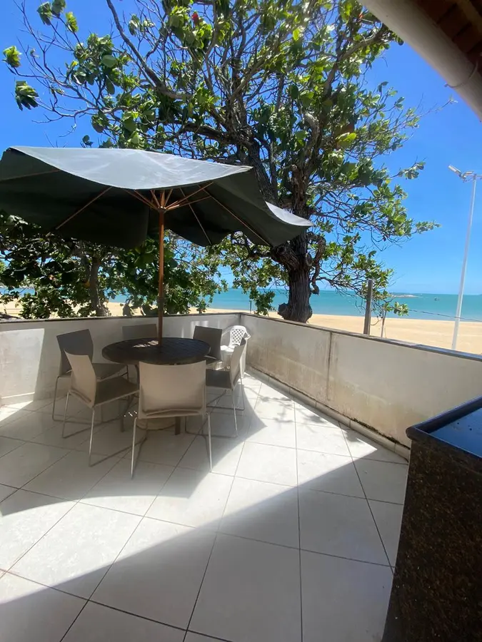
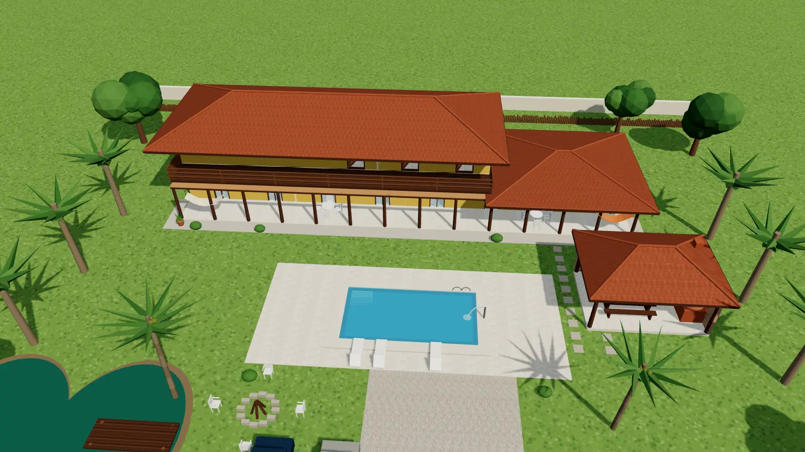

piscina
Piscina privativa
Aberta o ano todo, só do grupo que está hospedado. Inverno ameno, verão quente.
Guarapari e litoral do Espírito Santo
Dois imóveis de temporada do Oswaldo: o sítio com piscina e lago em Guarapari, e a casa de frente para o mar. Toque num deles para ver fotos, planta 3D e datas.
Escolha o imóvel, ou deixe em qualquer um, que o Oswaldo responde no WhatsApp.
os imóveis
O Oswaldo aluga dois imóveis no Espírito Santo, e eles não poderiam ser mais diferentes um do outro. A Villa Felicidade fica na zona rural de Guarapari, num sítio com piscina, lago de pesca, cavalos e onze suítes — feita para famílias grandes e turmas de amigos que querem o sossego do campo sem abrir mão da praia, que fica a doze minutos.
A outra é uma casa pé na areia, de frente para o mar, com varanda, sala, cozinha e quartos com vista para a praia. Da mesa do café da manhã dá para ver a areia e os barcos.
Os dois são alugados direto com o dono, sem intermediário e sem taxa de plataforma: você fala com o Oswaldo, combina as datas e ele confirma a disponibilidade.
Nesta página estão as fotos dos dois, uma planta 3D para entrar em cada um antes de reservar, as distâncias até as praias e as informações práticas de horário, café da manhã e pets.


escolha o seu
no sítio
A Villa Felicidade não é só um lugar para dormir perto da praia. É um sítio inteiro à disposição do grupo: piscina aberta o ano todo, lago para pescar, churrasqueira, fogueira e os bichos do campo. Quem quiser praia, pega o carro e em doze minutos está na areia.
Aberta o ano todo, só do grupo que está hospedado. Inverno ameno, verão quente.

Pesca com devolução dos peixes, numa tarde inteira sem pressa.

Bois e vacas no pasto, e passeio a cavalo quando combinado antes.

Cooktop, fogão industrial, dois freezers e geladeira: dá para cozinhar para dezesseis.

Churrasqueira, fogueira ao ar livre e uma mesa que cabe todo mundo junto.

Servido em buffet. No check-in, pão e bolo por conta da casa.
planta 3d
Um modelo 3D de cada imóvel, com os quartos, a área gourmet e a piscina no lugar. Gire, tire o telhado e veja como tudo se encaixa, no celular ou no computador.

Suítes, cozinha gourmet, piscina, lago e varanda — em 3D, na palma da mão.
Abrir a planta 3DAs plantas 3D são uma representação feita a partir das fotos e das informações do proprietário. Servem para entender a distribuição dos ambientes, não como planta técnica.
Na casa de praia, a areia começa do outro lado do calçadão, em frente à varanda.
galeria
qual dos dois
Os dois são do Oswaldo e os dois ficam no Espírito Santo, mas servem a viagens diferentes. Se estiver em dúvida, diga quantos vocês são e o que procuram, que ele indica.
sítio em Guarapari · para grupos grandes
de frente para o mar · para quem quer pé na areia
arredores
O sítio fica na zona rural, mas perto de tudo o que Guarapari tem de verão: praias, beach clubs e a casa de shows. A casa de praia já nasce na orla.
onde fica
A Villa Felicidade fica na Estrada Aldeia Velha — Taquara do Reino, na zona rural de Guarapari, a 1,7 km de estrada de chão bem cuidada às margens da Rodovia do Sol. São cerca de dez quilômetros até a praia de Meaípe e até o Multiplace Mais, e 65 km do aeroporto de Vitória. A casa de praia fica de frente para o mar; o endereço exato o Oswaldo passa na reserva.
As distâncias são as informadas pelo proprietário e pelo anúncio do sítio.
dúvidas
na prática
Os horários e as condições acima são os do sítio. Para a casa de praia, o Oswaldo combina direto com você no WhatsApp.
Fale direto com o Oswaldo, dono dos dois. Ele responde pelo WhatsApp.